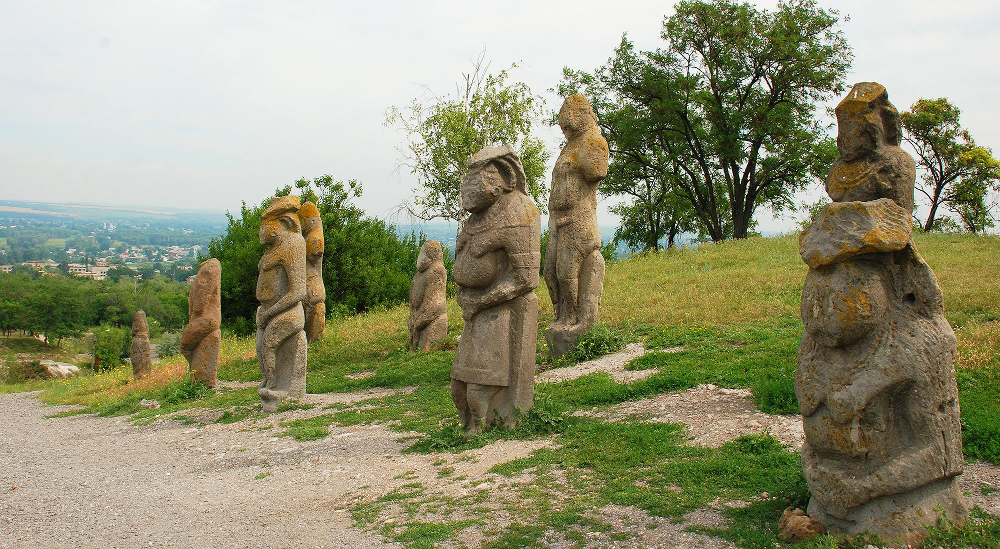
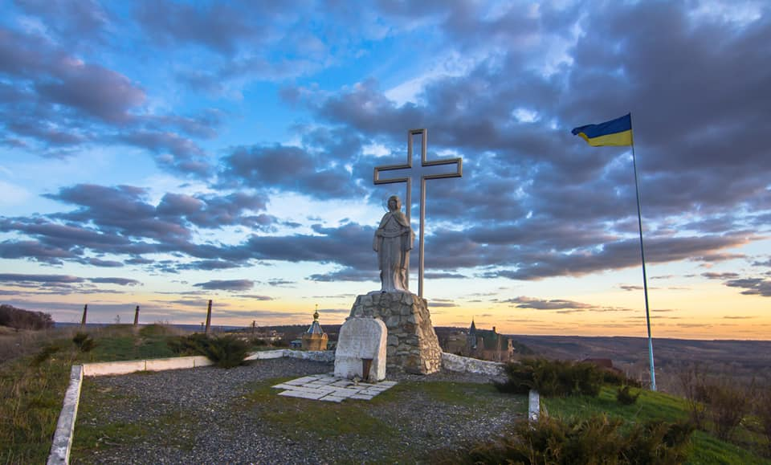
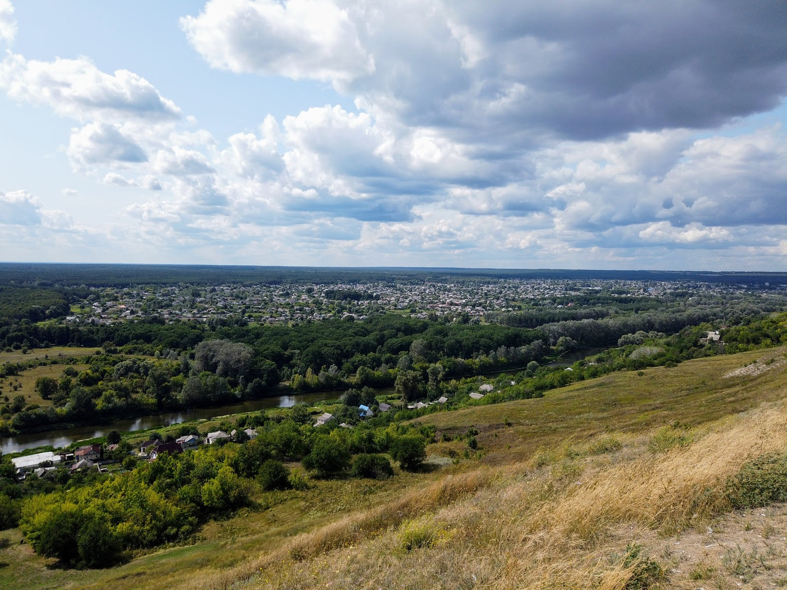

Гора Кременець

Основна інформація та історія
Кременець — гора, комплексна пам'ятка природи в місті Ізюмі, що в Харківській області. Розташована у південній частині міста, на правому березі річки Сіверський Донець.
Висота гори згідно топографічних мап Генштабу становить 177,4 м над рівнем моря, а поширена в інтернеті цифра 218 - завищена. Складається з крейдяних відкладів, шарів білої крейди, крейдяних пісків, піщаників, піщаниково-глинистих юрських відкладів. Час утворення яких приходився на верхньоюрський та крейдовий періоди. Поширені карстові лійки. Поверхня вкрита розрідженою степовою рослинністю (типчак, ковила, ефедра тощо); частково заліснена.
У добу Середньовіччя Кременець слугував орієнтиром для руху степовими шляхами, вказував на Ізюмський перелаз, переправу. Біля підніжжя Кременця здійснювалися переправи військ Мономаха (1111 рік) та Ігоря (1185 рік). У XIV—XVI століттях Кременець знаходився на «татарській» стороні Сіверського Дінця, слугував спостережним пунктом, і, як припускають, можливо, — поштовим постом, дороговказом на татарських сакмах. Під час прокладання водогону в 1920-х років на вершині Кременця був знайдений полірований гранітний камінь із написом: «Повелів зробити це Алі ад Дін син Джемаль ад Діна, сина Алі Таразі, в день 2 шавваля з місяців 734 року», (переклад В. Бартольда), камінь був втрачений, як припускають, 1943 року, під час окупації Ізюма. На думку деяких фахівців цей камінь є свідченням використання Кременця у політиці Узбек-хана
Географічне розташування
Ізюмський район
Фотогалерея


